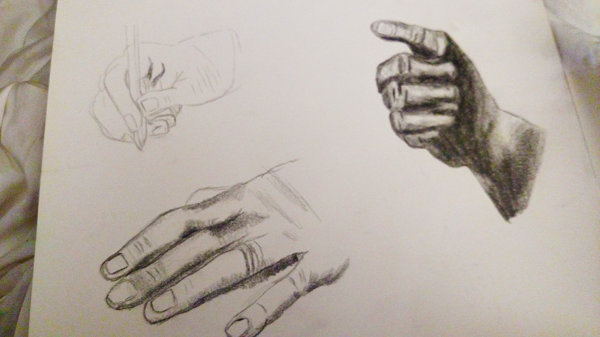
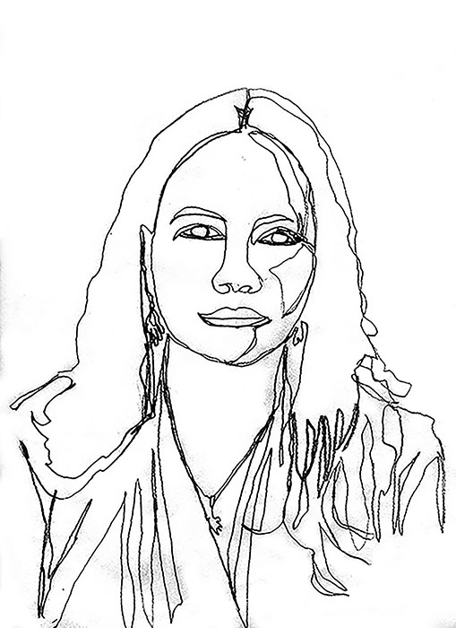

Digital Image-Making

This landscape photo was taken using the time technique.
Drawing
This drawing was done with charcoal.
Design Foundations
Line drawing using marker.
Typography

This poster was designed using only font and three colors.